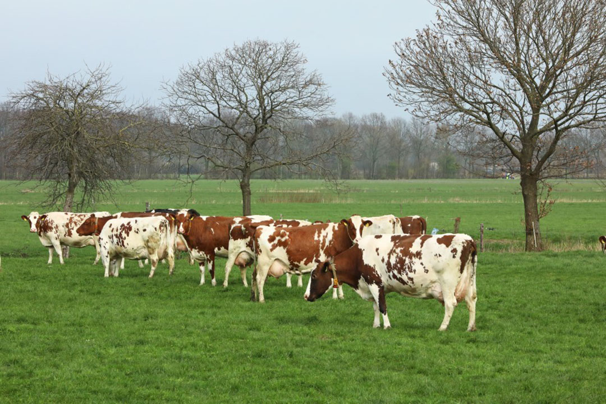
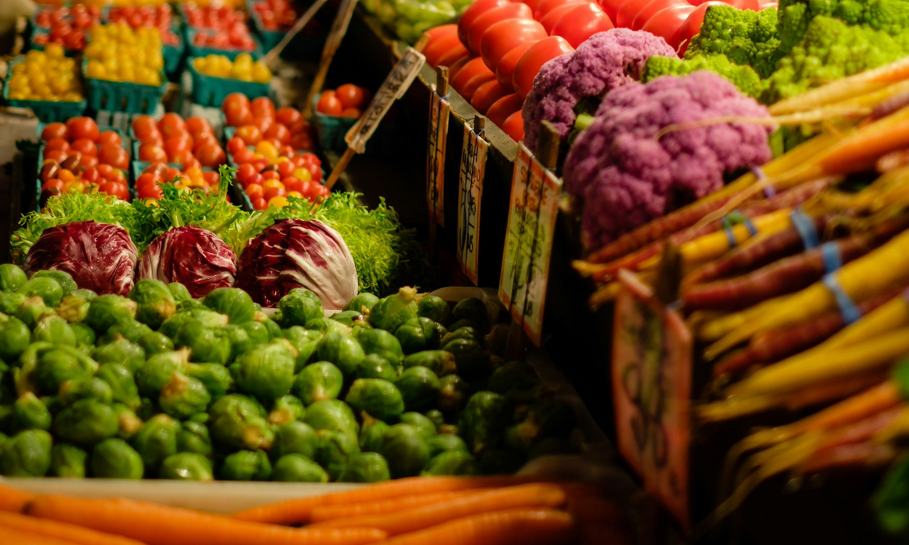
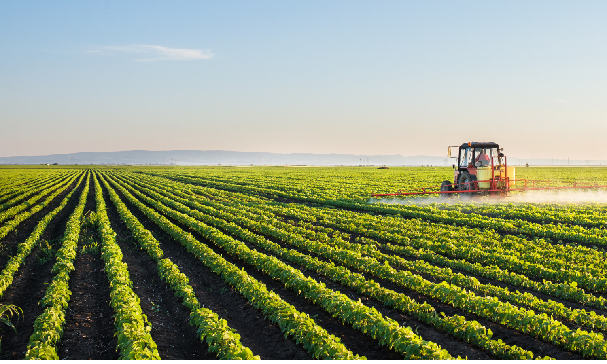
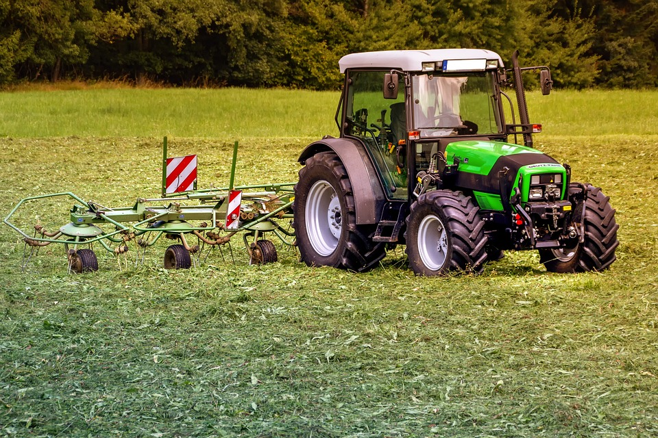
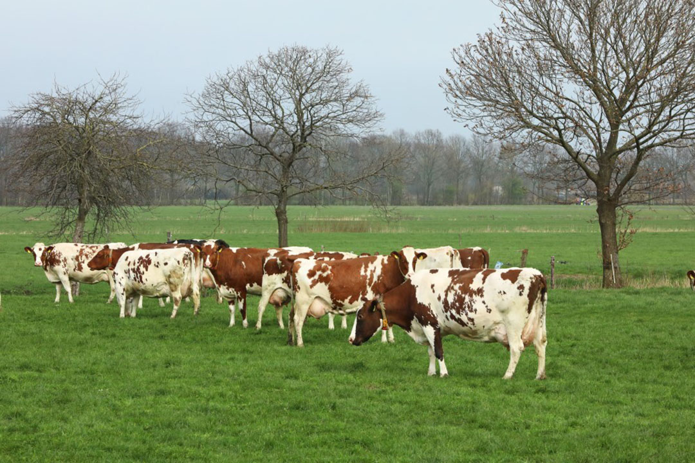
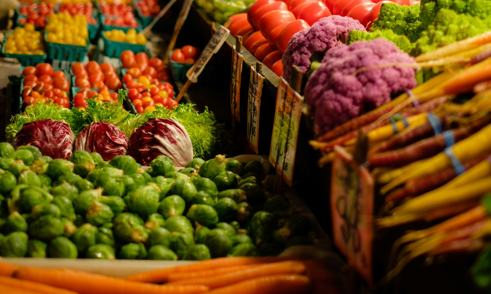
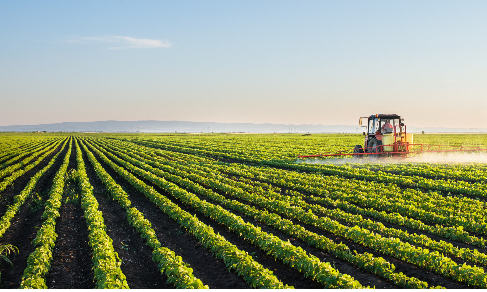
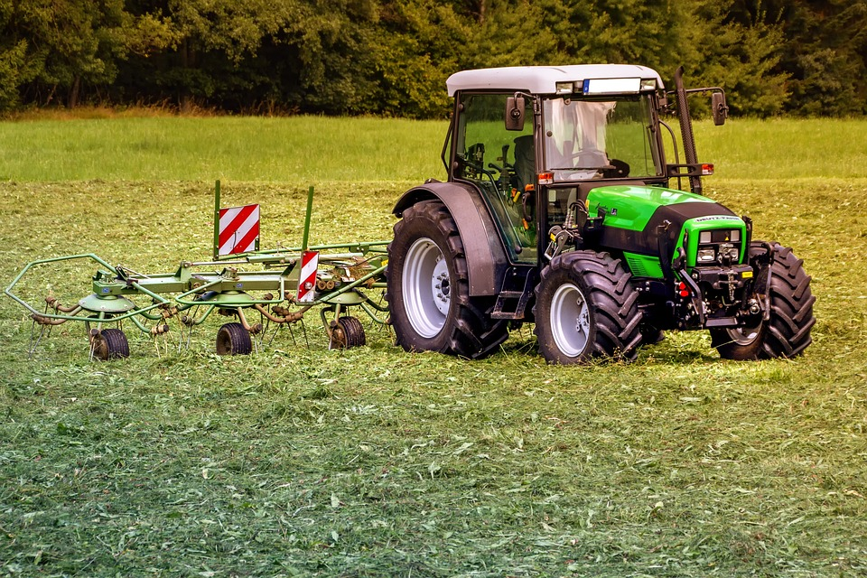
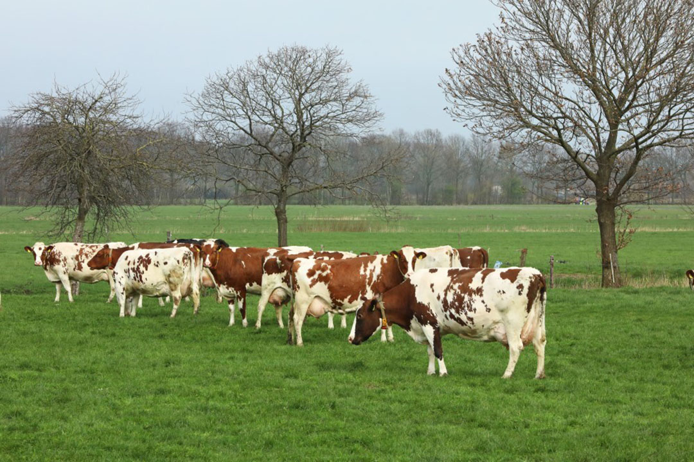
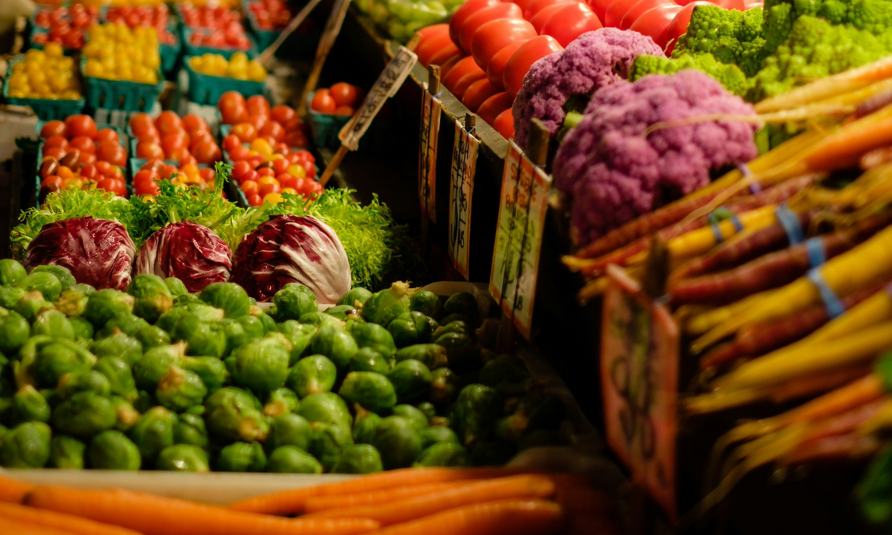
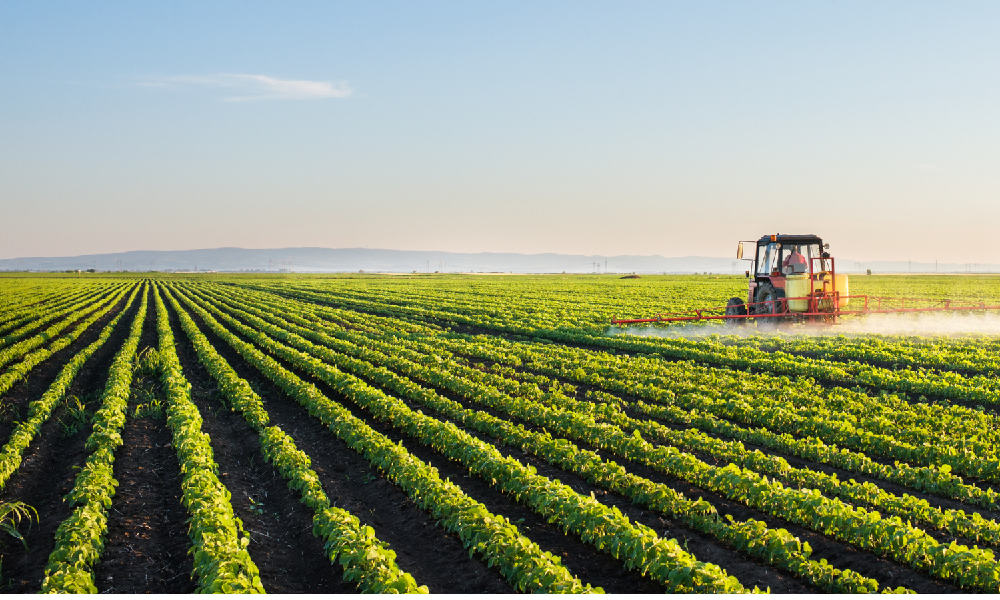
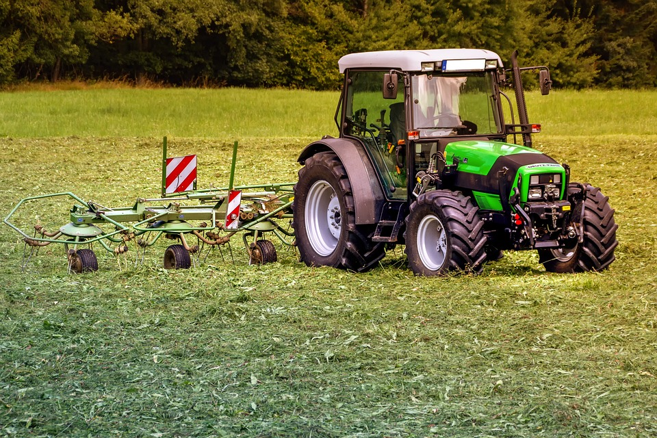
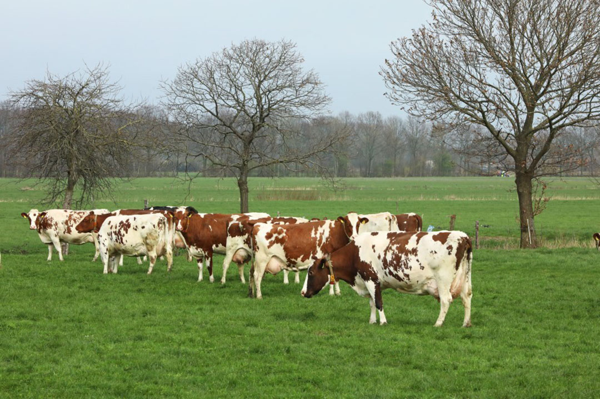
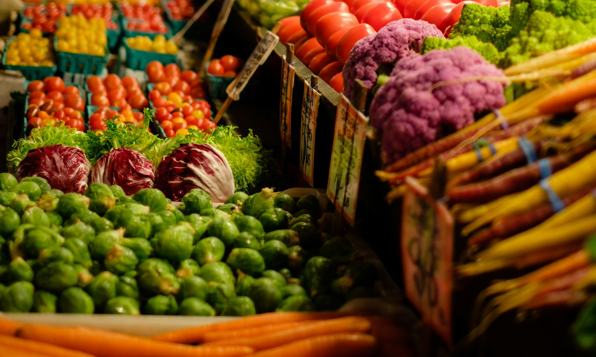
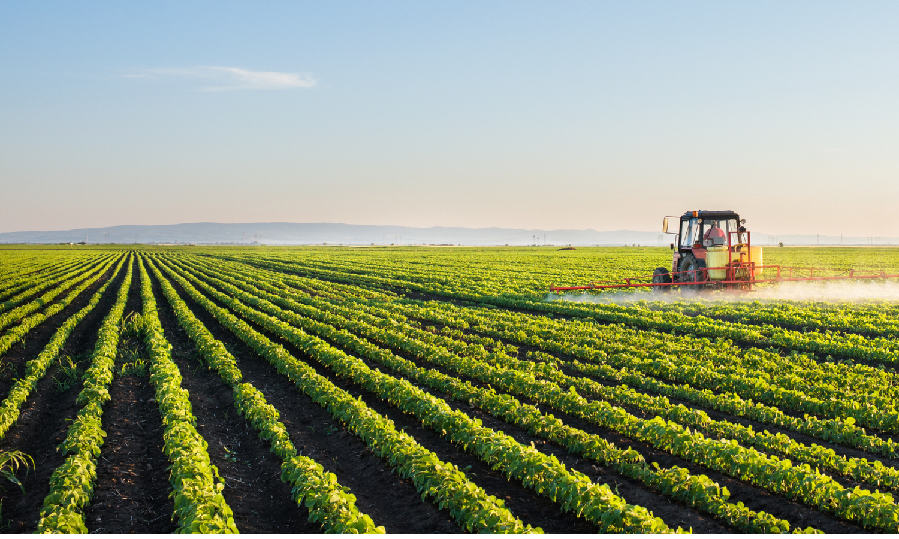
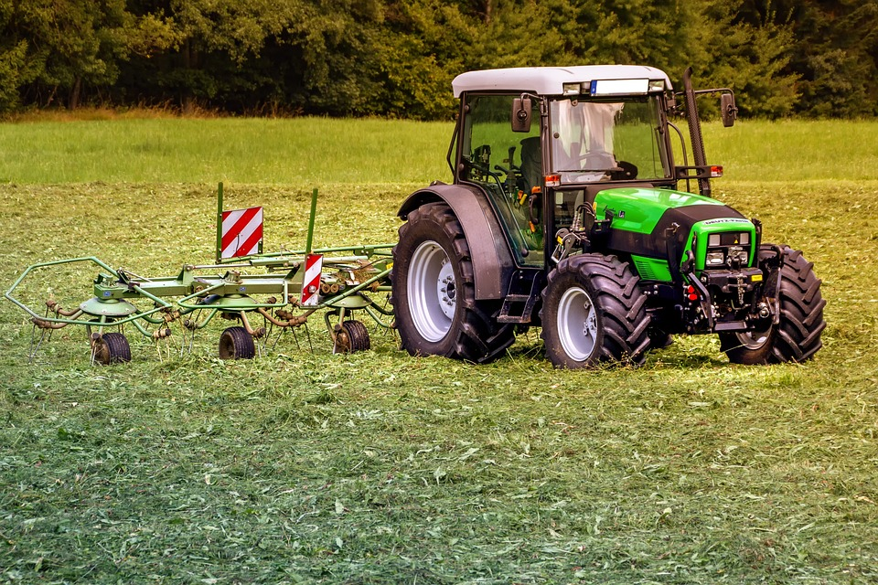
“Welcome to GreenHarvest! Our mission is to empower every Tanzanian farmer with knowledge, tools, and access to technology that increases productivity and improves livelihoods. Let’s grow together!”